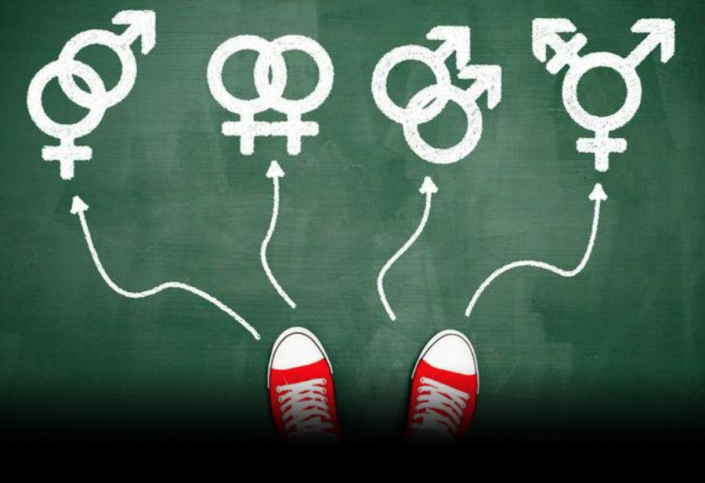

Importancia de educar en sexualidad

La sexualidad es el conjunto de características físicas y psicológicas dadas a la hora de definir cada sexo. Dicha palabra se entiende también como una referencia al apetito sexual y las conductas y emociones que se le asocian. Durante toda la vida tenemos sexualidad, sin embargo, somos fértiles desde los 11-15 años hasta los 45-50, dependiendo de la persona.
Antiguamente, toda práctica sexual que no iba destinada a la procreación era considerada antinatural. No obstante, hay tantas formas de vivir la sexualidad como seres humanos en el mundo. Hay a quien le gustan solo, en pareja o en grupo, con personas de su sexo o de otro distinto, con frecuencia o sin ella y otra infinidad de características que, siempre que sean consensuadas con los posibles acompañantes, han de ser respetadas. La educación sexual es una herramienta que nos ayuda a elegir hábitos y a tomar buenas decisiones en ámbitos de sexo y sexualiad a lo largo de nuestra vida.
Muchas personas siguen pensando que es inefectiva y que solo sirve para que la juventud empiece antes a activar su vida sexual. Nada más lejos de la realidad, numerosos estudios han demostrado la efectividad de la educación sexual, sobre todo si se llevan a cabo los apartados de la National Campaign to Prevent Teen and Unplanned Pregnancy, escritos por Douglas Kirby.